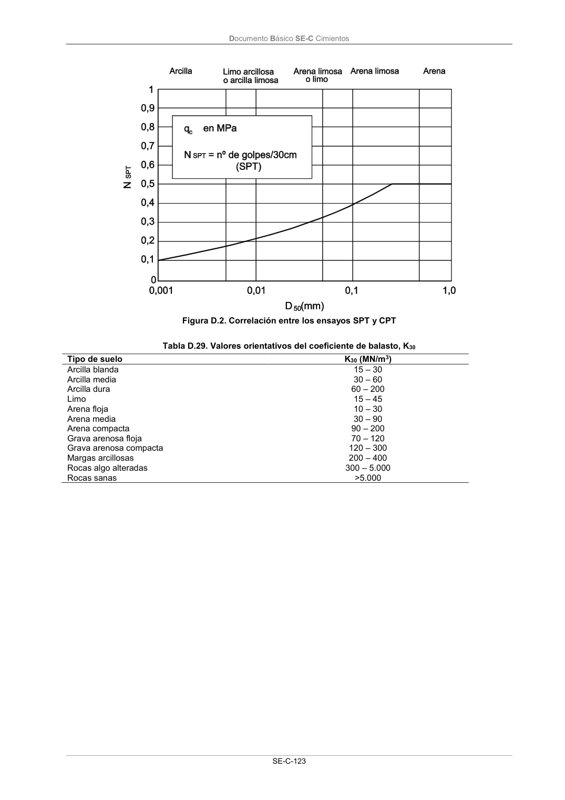

DB-SE-C Cimientos · edición 2019-12-20 · capa oficial
Documento DB-SE-C-oficial · SHA-256 del PDF a71133f4b0dca253e45ea3071c70f2a512354bcc5cd841bf89b1a502f567ac5e
Página física 128 de 165.
Copia fiel del PDF fuente · Fuente oficial
Ficha de la disposición en la fuente oficial
Formato: Texto de la página (Markdown)
Documento Básico SE-C Cimientos SE-C-123 Figura D.2. Correlación entre los ensayos SPT y CPT Tabla D.29. Valores orientativos del coeficiente de balasto, K30 Tipo de suelo K30 (MN/m3) Arcilla blanda 15 – 30 Arcilla media 30 – 60 Arcilla dura 60 – 200 Limo 15 – 45 Arena floja 10 – 30 Arena media 30 – 90 Arena compacta 90 – 200 Grava arenosa floja 70 – 120 Grava arenosa compacta 120 – 300 Margas arcillosas 200 – 400 Rocas algo alteradas 300 – 5.000 Rocas sanas >5.000
